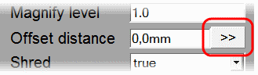

Displays properties dialog to view and edit properties of an object created using 'LSS Toolbar'
- select any entity, which is a part of an object created using any tool of 'LSS Toolbar'
- click
 command button of 'LSS Toolbar' or choose 'Edit Entity Properties' command from 'Sketchup Main Menu>>Plugins>>LSS Tools'
command button of 'LSS Toolbar' or choose 'Edit Entity Properties' command from 'Sketchup Main Menu>>Plugins>>LSS Tools'
- change any editable property in the list to refresh 'LSS Object' immidiately
As soon as 'Properties' dialog is open it observes selection changes and refreshes properties list automatically after
selection changes.
'Properties' dialog provides two ways to enter values of properties that represent any kind of distance:
- enter distance value from a keyboard directly in value field of 'Properties' dialog box
- use '>>' button to specify distance value interactively in an active model

The result of any 'LSS Toolbar' tool processing is not just a set of new geometric entities but an object,
which allows interaction after tool processing completion.
Each 'LSS Object' has two basic parts:
- 'passive' part — new geometric entities (a direct result of tool processing)
- 'active' part — existing (initial) and/or newly generated (utility) entities
So it is possible to continue interaction with an object by modifying its 'active' part.
There are two ways to refresh object's 'passive' part after 'active' part modification:
 manual — 'Refresh' command
manual — 'Refresh' command automatic — 'Observe Changes' command
automatic — 'Observe Changes' command